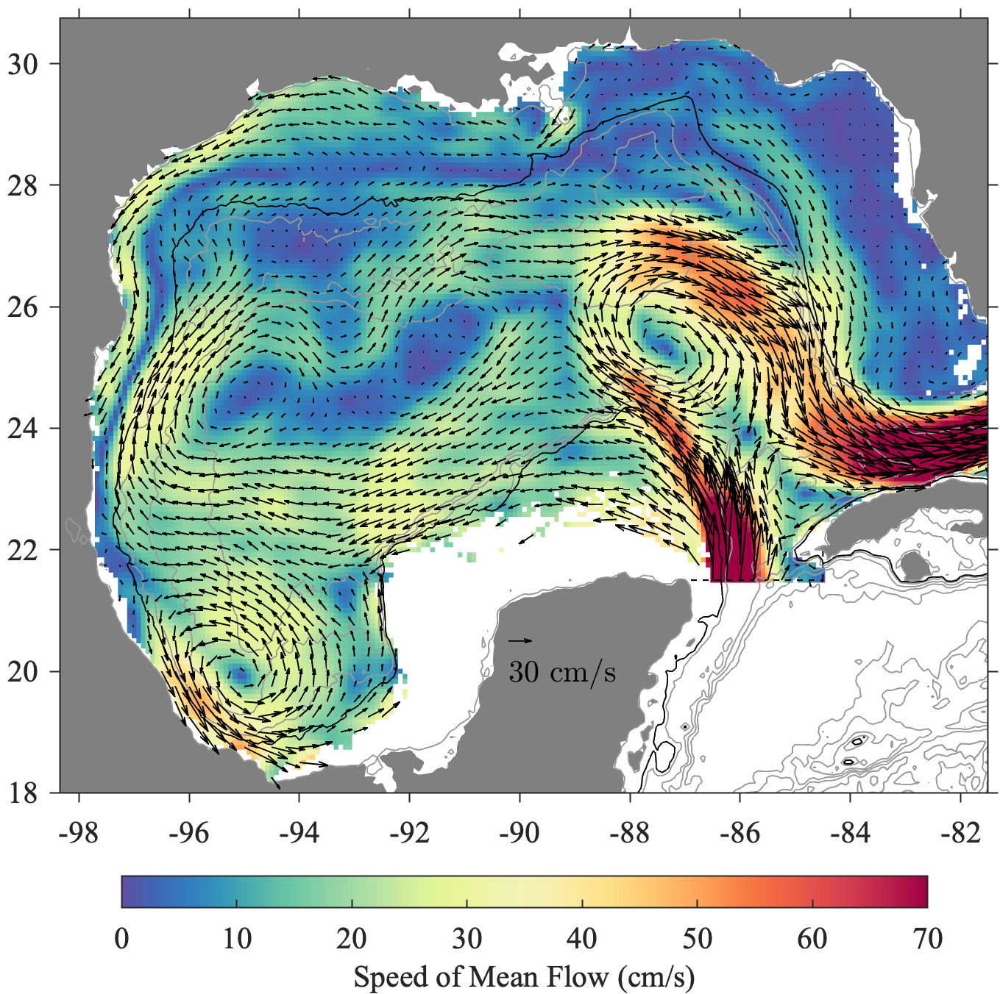
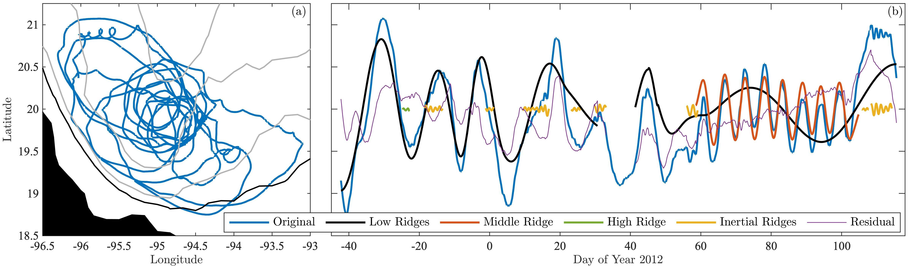

class: center, middle <br/><br/><br/> .title[Research at CAML] <br/><br/> .author[Kalayana B. Nakshatrala] .coauthor[] <br/> .institution[Civil and Environmental Enginnering<br/> University of Houston] <br/><br/> .date[February 17, 2020] <br/> <br/> .note[Created with [{Liminal}](https://github.com/jonathanlilly/liminal) using [{Remark.js}](http://remarkjs.com/) + [{Markdown}](https://github.com/adam-p/markdown-here/wiki/Markdown-Cheatsheet) + [{KaTeX}](https://katex.org)] <!--A method for objectively estimating coherent eddy properties from Lagrangian trajectories is applied to a large surface drifter dataset of 3310 trajectories from the Gulf of Mexico. A means for formally assessing statistical significance is introduced, addressing the issue of potential "false positives" arising by chance from an unstructured turbulent background. The resulting event census reveals several new features of the Gulf of Mexico eddy field, which are investigated with the help of comparisons with a high-resolution numerical model of the region as well as satellite altimetry. The eddy field is seen to be highly anisotropic, with anticyclones dominating for scales 50 km and larger, and cyclones dominating for smaller scales. Unsurprisingly, anticyclonic events generally match the properties of the large Loop Current Eddies, observed to form periodically in the eastern Gulf from pinch-off events of the Loop Current, and then to drift westward. At scales of 50 km and below, however, an energetic cyclonic eddy field is seen, but anticyclonic events are almost entirely absent. Highly nonlinear cyclonic events with radii consistently less than about 10 km are observed throughout the Gulf, apparently representing a rich field of surface submesoscale vortices; that these small and difficult-to-observe features are revealed is a testament to the sensitivity of the eddy detection method. Between about 10 km and 50 km, the cyclonic eddy field is dominated by long-lived, highly nonlinear features. Those in the eastern basin are identified as Loop Current Frontal Eddies originating from the strong cyclonic shear zone on the periphery of the Loop Current. Similar features in the western basin are seen to originate from the same source, and then to propagate across the Gulf. Moreover, these sometimes merge with the long-lived Campeche Gyre in the southwestern Gulf, suggesting such eddy mergers may play an important role in the formation and maintenance of this feature. These results suggest that the primary source for intense mesoscale cyclonic variability throughout the entire Gulf of Mexico is the cyclonic shear zone on the outer edge of the Loop Current.--> --- class: center ##Surface Drifter Data for the Gulf of Mexico <!--All publicly available surface drifter data, plus some that are not, spanning 3762 trajectories, 27 years, and more than a different dozen experiments.--> 3661 trajectories, 27 years, 13 data sources, 4.5 M hourly points Lilly & Perez-Brunius (2020), in prep. --- class: center ## The Gulf Surface Currents  High resolution Gulf currents from drifters — details [{here}](http://www.jmlilly.net/papers/lilly20-sccoas.pdf) --- class: center ##How to make this work <video preload="auto" width="70%" height="auto" data-setup="{}" autoplay loop controls><source src="./videos/gulfmovie.mp4" type="video/mp4" /></video> <!--All publicly available surface drifter data, plus some that are not, spanning 3762 trajectories, 27 years, and more than a different dozen experiments.--> Semimonthly animation with speed colored --- class: center ##Identification of Individual Eddy Events <video preload="auto" width="70%" height="auto" data-setup="{}" autoplay loop controls><source src="./videos/gulfeddymovie.mp4" type="video/mp4" /></video> Loops are estimated orbital paths of apparently trapped particles <!--estimated with a wavelet-based method--> <!--All publicly available surface drifter data, plus some that are not, spanning 3762 trajectories, 27 years, and more than a different dozen experiments.--> --- class: center ## Extraction of Quasi-Oscillatory Signals  <!--Modulated oscillations are extracted from a trajectory in the southwest Gulf of Mexico, the Bay of Campeche.--> <!--sOn the right are the original, extracted, and residual latitude signals.--> A detected oscillatory feature is called a “ridge.” $Ro\equiv \omega/f$ = Lagrangian frequency Rossby number = $\frac{1}{2}\zeta/f$ $L\_\star$ = ridge length in number of cycles completed Ridges are extracted in the band $1/64 \lt Ro \lt 2$ and with $L_\star\gt1$. Inertial oscillations occur at $Ro=-1$. Stability boundary at $Ro=-\frac{1}{2}$ or $\zeta=-f$. $Ro\_\star$ = time average of $Ro$ over an entire ridge <!--A fourth important parameter controls the time-frequency tradeoff.--> <!--Time width of wavelet set to $\approx 1.6$ oscillations.--> <!--Using Morse wavelets with family $\gamma=3$ and order $\beta=2$. The wavelet duration in # of cycles is $2\sqrt{\beta\gamma}/\pi=2\sqrt{6}/\pi\approx 1.6$--> --- class: center ## Ridge-Average Properties <!--Scatter plots of ridge-averaged quantities for all ridges. $R\_\star$ vs. $V\_\star$ (left) and $R\_\star$ vs. $Ro\_\star$ (right).--> Note: (i) cyclone / anticyclone asymmetry; (ii) gap near $Ro\_\star=-\frac{1}{2}$; (iii) $\approx 90$ % are inertial oscillations; (iv) possible false posit --- class: center ## A Significance Test <!--$\zeta\_\star$ = circular polarization $\frac{2a|b|}{a^2+b^2}$, $L\_\star$ = duration in number of cycles--> $\zeta\_\star$ = time-averaged circular polarization $\frac{2a|b|}{a^2+b^2}$ Color = ratio of survival or reverse cumulative density functions Gray = larger $\zeta\_\star $ or $L\_\star$ values 10$\times$ more frequent in data vs noise Black = 100$\times$ more frequent <!--Significance is assessed using survival functions on the $\zeta\_\star/L\_\star$ plane.--> --- class: center ## All Anticyclones Colored by $Ro\_\star$ <!--Mostly we are seeing the well-known Loop Current Eddies.--> --- class: center ## Case Study of a Loop Current Eddy <!--The origin and evolution of the Loop Current Eddies is well known.--> Evidence of three different propagation velocities: 3.5 cm/s, 5 cm/s, stalled --- class: center ## All Cyclones Colored by $L\_\star$ <!--High $Ro\_\star$, medium-sized cyclones are typically long duration.--> --- class: center ## Ridge Properties After Editing Major asymmetries: (i) intense submesoscale cyclones; (ii) mesoscale cylcones; (iii) anticyclonic Loop Current Eddies --- class: center ## $|Ro|\gt 1/6$ Cyclones Colored by $Ro\_\star$ <!--Many medium and small high $Ro\_\star$ events, but few large events.--> --- class: center ## Origin of Strong Mesoscale Cyclones <video preload="auto" width="80%" height="auto" data-setup="{}" autoplay loop controls><source src="./videos/origincyclonemovie.mp4" type="video/mp4" /></video> Lagrangian ellipses combined with sea surface height from CMEMS. <!--This cyclone originates in the Loop Current, then drifts westward.--> <!--Genesis and westward propagation of an intense cyclone. --> --- class: center ## Strong Cyclones Feed the Campeche Gyre <video preload="auto" width="80%" height="auto" data-setup="{}" autoplay loop controls><source src="./videos/mergercyclonemovie.mp4" type="video/mp4" /></video> Lagrangian ellipses combined with sea surface height from CMEMS. --- class: center ## Comparison with a Numerical Model <video preload="auto" width="72%" height="auto" data-setup="{}" autoplay loop controls><source src="./videos/roms_vorticitymovie.mp4" type="video/mp4" /></video> Source of positive vorticity is inflow through the Yucatán Channel. --- class: center ## Small Cyclone Ellipses, $R\_\star<10$ km Focus on small cyclones, with 4x as many ellipses as before. --- class: left ##Conclusions An objective analysis of oscillatory featuress in drifter trajectories in the Gulf of Mexico reveals new features of the eddy field. An eddyless null hypothesis allows one to assess the statistical confidence that eddy ridges are not due to stochastic fluctuations. <!--1. Intense cyclones are seen throughout the Gulf, with Rossby numbers exceeding 1/6, and no analogue on the cyclonic side. 2. For $10<R\_\star<50$~km, the eastern eddies are the Loop Current Frontal Eddies (LCFE's) studied by e.g. Le Hénaff et al. (2014). 3. Some of the western eddies are show to also be LCFEs. Thus, the origin of the strong eddies in the $10<R\_\star<50$ band throughout the Gulf is the cyclonic shear of the Loop Current. 4. Some of these western cyclones are seen to feed the Campeche Gyre, suggesting this feature may be driven or enhanced by vorticity originating in the cyclonic shear zone.--> 1. Intense cyclones with $Ro\_\star>1/6$ throughout the Gulf, with no analogue on the anticyclonic side 2. Strong $10<R\_\star<50$ km cyclones in the east are Loop Current Frontal Eddies (LCFE's), e.g. Le Hénaff et al. (2014) 3. Strong $10<R\_\star<50$ km cyclones in the west appear to be LCFE's that have propagated across the basin 4. Western cyclones feed the Campeche Gyre, suggesting a link to the cyclonic shear zone of Loop Current 5. Highly nonlinear, very small $R\_\star<10$ cyclones appear to reflect an active, rapidly advected submesoscale 6. Above $R\_\star>50$, anticyclonic Loop Current Eddies dominate To do: compare with eddies in numerical models of the Gulf, detected using this method and also standard Eulerian methods. <!--.center[Visit [{www.jmlilly.net}](http://www.jmlilly.net) for papers, this talk, and Matlab code.]--> --- class: center, middle # Thank you! This talk is available at [http://www.jmlilly.net/talks.html](http://www.jmlilly.net/talks.html) <br><br> <b>Acknowledgment</b><br><br> This research has been funded by the Mexican National Council for Science and Technology - Mexican Ministry of Energy - Hydrocarbon Fund, project 201441. .footnote[ P.S. Like the way this presentation looks? Check out [{Liminal}](https://github.com/jonathanlilly/liminal).] --- class: left ##A Model for Lagrangian Trajectories <!--<img style="width:100%;margin-top:-0.2em;margin-bottom:-0.2em" src="./figures/nonlineareddyallridges.png">--> A model for Lagrangian trajectories $z(t)=x(t) + \mathrm{i} y(t)$ with eddies: <div>$$z(t)=x(t) + \mathrm{i} y(t) =z_\epsilon(t) + \boxed{z_\star(t)}.$$</div> Turbulent background $z\_\epsilon(t)$ (stochastic) plus $z\_\star(t)$ (oscillatory). The oscillatory signal $z\_\star(t)$ is modeled as a *modulated ellipse*: <div>$$z\_\star(t)=\mathrm{e}^{\mathrm{i}\theta(t)}\left[a(t)\cos \phi(t)+\mathrm{i}b(t)\sin \phi(t)\right].$$</div> <img style="width:90%;margin-top:-0.7em;margin-bottom:-0.8em" src="./figures/ellipsestability.png"> --- class: left ##Lagrangian Estimation of Eddy Properties This problem has five parts. 2. From $\widehat{z}\_\star(t)$, estimate $a(t)$, $b(t)$, $\theta(t)$, and $\phi(t)$ that generated it. 2. Address errors in $\widehat{z}\_\star(t)$ due to modulation, a.k.a. bias error. 1. Address “false positives” due to inertial oscillations. 3. Address “false positives” of $\widehat{z}\_\star(t)$ due to the background $z_\epsilon(t)$. 1. Estimated the eddy signal $\widehat{z}\_\star(t)$ given a noisy time series $z(t)$. Solutions: 1. The analytic signal of .cite[Gabor (1946)], see .cite[Lilly and Olhede (2009)]. 2. The internal bias estimate of .cite[Lilly and Olhede (2012)]. 1. Easy; specify $\omega/f>-1/2$, as shown shortly. 3. A significance test based on a stochastic model, introduced here. 4. Multivariate wavelet ridge analysis of .cite[Lilly and Olhede (2012)]. --- class: left ## Inferring Ellipse Properties <div>$$z\_\star(t)=\mathrm{e}^{\mathrm{i}\theta(t)}\left[a(t)\cos \phi(t)+\mathrm{i}b(t)\sin \phi(t)\right]$$</div> Given $z\_\star(t)$, we wish to infer $a(t)$, $b(t)$, $\theta(t)$, and $\phi(t)$. This is a generalization of, given $x\_\star(t)=a(t)\cos \phi(t)$, infer $a(t)$ and $\phi(t)$, solved in a landmark paper by .cite[Gabor (1946)]. The solution is to form the analytic signal $x\_\star^+(t)$, by zeroing negative frequencies and doubling positive frequencies. Then $x\_\star(t)=\Re \left\\\{x\_\star^+(t)\right\\\}$, and $\widehat{a}(t)\mathrm{e}^{\mathrm{i}\widehat{\phi}(t)}\equiv x\_\star^+(t)$ gives sensible estimates. This inverse problem has no other sensible solution .cite[(Vakman 1996)], i.e. giving the right answer for a pure sinusoid. Generalizing to two variables, we form $\mathbf{z}(t)=[x(t)\,\,y(t)]^T$ and take its analytic part $\mathbf{z}_+(t)$ .cite[(Lilly and Olhede, 2009)]. This defines $\widehat{a}(t)$, $\widehat{b}(t)$, $\widehat{\theta}(t)$, and $\widehat{\phi}(t)$ which are again the only sensible estimates. When noise is present, we can't apply this method directly. The analytic signal is implicitly employed in wavelet ridge analysis. --- class: left ## Example of Wavelet Ridge Analysis An elliptical signal is estimated by $\widehat{\mathbf{z}}(t)\equiv \mathbf{w}\left(t,\widehat{s}(t)\right)$ where $\widehat{s}(t)$ are “ridges”, maxima curves of the transform modulus $\|\mathbf{w}(t,s)\|$. Constrained on physical grounds to end at $|w\_+(t,s)|=|w\_-(t,s)|$. --- class: left ## A Bias Estimate The leading-order term in the bias error is .cite[(Lilly and Olhede, 2012)] <div>$$\frac{\|\widehat{\mathbf{z}}_+(t)-\mathbf{z}_+(t)\|}{\left\|\mathbf{z}_+(t)\right\|} \approx \varsigma(t)\equiv \frac{1}{2} \frac{P}{\omega^2(t)} \frac{\left\|\mathbf{c}(t)\right\|}{\left\|\mathbf{z}_+(t)\right\|}$$</div> where $\mathbf{z}(t)=[x(t)\,\,\,y(t)]^T$, $\mathbf{z}_+(t)$ is its analytic part, and the parameter $P$ controls the wavelet time/frequency tradeoff. <br><br> The second-order departure of $\mathbf{z}_+(t)$ from a local oscillation at the frequency $\omega(t)$ is described by <div>$$ \mathbf{c}(t) = \frac{\mathrm{d}^2}{\mathrm{d}t^2}\,\mathbf{z}_+(t)-\mathrm{i}2\omega(t) \frac{\mathrm{d}}{\mathrm{d}t}\,\mathbf{z}_+(t)-\omega^2(t)\mathbf{z}_+(t) $$</div> where the <b>joint instantaneous frequency</b> is the natural measure of time-varying frequency in the bivariate case .cite[(Lilly and Olhede, 2009)] <div>$$\omega(t)\equiv\frac{\Im\left\{\mathbf{z}_+^H(t)\frac{\mathrm{d}}{\mathrm{d}t}\mathbf{z}_+(t)\right\}}{\|\mathbf{z}_+(t)\|^ 2}.$$</div> This states that error is proportional to the second-order deviation of the signal from a pure sinusoid over the time scale of the wavelet. --- class: left ## Removing Inertial Oscillations Inertial oscillations generally occur at $\omega=-f$, but may be shifted by background vorticity to $\omega=-f-\zeta/2$ (Kunze, 1985). The strongest possible nonlinear anticyclonic eddy is $\zeta/f=-1$ (e.g. Thomas, 2007), implying $\omega/f=-1/2$ for a circular eddy. This most nonlinear anticyclone frequency-shifts inertial oscillations from $\omega=-f$ to $\omega=-f-\zeta/2$ or $\omega/f=-1/2$. Thus, no eddies should occur below $\omega/f=-1/2$, and no inertial oscillations should occur above $\omega/f=-1/2$. There is no comparable stability boundary on the cyclonic side. Thus we keep only ridges with ridge-averaged Rossby numbers <div>$$Ro\_\star\equiv\omega\_\star/f\_\star>-1/2.$$</div> Next we turn to examining false positives emerging from the stochastic background. --- class: center ##Validation Using a Model of an Eddy <video preload="auto" width="95%" height="auto" data-setup="{}" autoplay loop controls><source src="./videos/nonlineareddyparticlemoviewithellipses.mp4" type="video/mp4" /></video> An eddy at 24°N tracked by 512×256=131,072 particles, by J. Early. The ellipses represent a time-varying best fit to local oscillatory variability in two dimensions. Color is estimated enclosed vorticity. See the [{2018 Ocean Sciences talk}](http://www.jmlilly.net/talks/lilly18-os.html) for more details. --- class: center ##Estimated vs. Actual Enclosed Vorticity Log10 histogram of estimated vs. true enclosed vorticity. <!--Ridges of the total transform magnitude, $\sqrt{|w_+(t,s)|^2+|w_-(t,s)|^2}$. Constrained on physical grounds to end at $|w_+(t,s)|=|w_-(t,s)|$. Thus, no changing rotation sense across linear polarization.-->